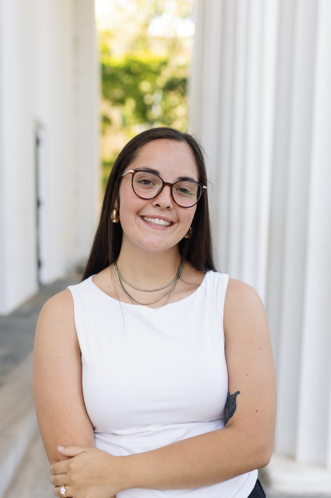

GET TO KNOW ME
A LITTLE
ABOUT ME.

I'm Callie Clark, a graphic designer and sports photographer with a passion for collegiate sports.
Callie Clark is a fourth-year student at the University of Georgia, double-majoring in Graphic Design and Religion, with a minor in Sports Management and a certificate in Sports Media from the Grady College of Journalism and Mass Communication.
Her work bridges the worlds of design, photography, and sport — capturing the emotion of competition and the beauty of storytelling through creative media.
Callie has gained hands-on experience with The Red & Black, Oconee County High School, Glory Glory, and the University of Georgia Athletics, where she's documented the energy and emotion that define athletic moments.
She believes visual storytelling has the power to elevate the world of sports beyond the field. Callie hopes to build a career in sports photography and graphic design, combining her eye for design with her passion for athletics.
DESIGN. PHOTOGRAPHY. STORYTELLING.